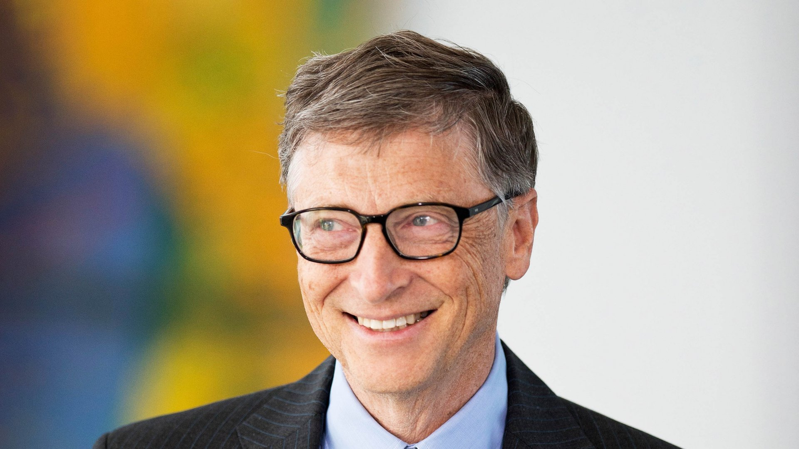

Timeline of Awards and Achievements - A Tribute To Bill Gates

Below you will find a timeline of Bill Gates's biggest and most famous accomplishments, achievements, and awards.
Awards and Accomplishments.
Bill Gates has received several awards, doctorates, and other recognitions of his work in both computer science and philanthropy. Here is a list of some of those recognitions.
1970 - Bill Gates, at just 15 years old, developed Traf-O-Data, a computer traffic monitoring program, with the help of Paul Allen. They collected $20,00 from it, which they later invested in creating Microsoft.
1975 - Just before creating Microsoft, Bill Gates and Paul Allen worked together to create an operating software for the Altair 8800 Micro-computer Machine, which they sold to the computer company, MITS, for $3,000.
1975 - Bill Gates's most famous accomplishment was one of his first ones. In January of 1975, Bill Gates established the most famous and most successful computer software company in the world to date, Microsoft.
1981 - The International Business Machine (IBM) formed a deal with Microsoft which proved beneficial to Bill Gates. IBM wanted Microsoft to create an operating system, or OS, for its upcoming PC. Microsoft made and sold the MS-DOS (Microsoft Disk Operating System), otherwise known as PC-DOS (Personal Computer Disk Operating System), to IBM for $50,000.
1992 - Bill Gates received the National Medal of Technology and Innovation by George H. W. Bush for his vision of computing at home and his contributions to the personal computer industry.
1995 - Microsoft released Windows 95 in the August of 1995. It was a game-changer in PC software. Windows is installed in almost 90% of all computers worldwide.
2005 - Bill gates was knighted as an honorary Knight Commander of the Order of the British Empire by Queen Elizabeth II.
2006 - Bill Gates and his wife were awarded the Order of the Aztec Eagle by the Mexican government for their philanthropic work in health and education.
2010 - Bill Gates received the Silver Buffalo Boy Scout Award for his contributions to youth health and development. Bill Gates was a boy scout in the 1960s and 1970s.
2013 - Bill and Melinda Gates received the German BAMBI Millenium Award for their philanthropic achievements and contributions.
2014 - Bill and Melinda Gates received the Indian Padma Bhushan award from the Indian president for their contributions to global development.
2016 - Both Bill and Melinda Gates were recognized for their philanthropic work when they received the Presidential Medal of Freedom by Barack Obama.
Bill Gates Photo Gallery.
Click the button below for a quote and photo gallery of Bill Gates.
Visit the main page for source information and links.